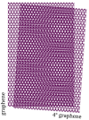

University of Manchester / National Graphene Institute
James G. McHugh
Dame Kathleen Ollerenshaw Fellow
I work on computational materials theory for two-dimensional materials and van der Waals heterostructures, with a focus on how stacking, strain, curvature, defects and interfaces shape electronic behaviour.
2D materials · moiré physics · stacking ferroelectrics · atomistic machine learning
Twisted bilayer graphene
04°
